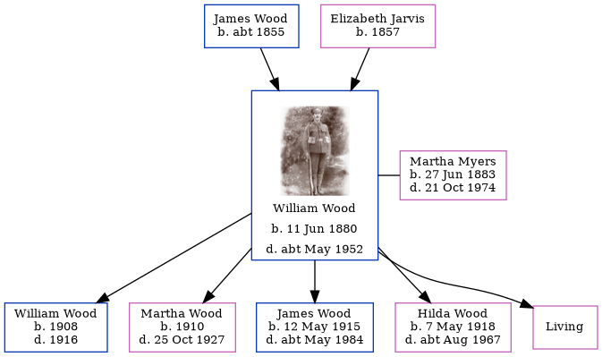

William Henry Wood 1880 - c1952
[ Home ] | [ Calendar ] | [ Surnames Index ] | [ Errors ] | [ Family History ]A plasterer and the child of James Wood and Elizabeth Jarvis, William Wood was born in Battersea, London, England on 11 Jun 18801,2 and married Martha Myers (with whom he had 5 children: William Henry, Martha Sarah, James, Hilda and Wilhelmina, along with 1 surviving child) in Tynemouth, Tyne and Wear, England around Nov 19074.
During his life, he was living at 40 Burdon Main Row in Tynemouth on 2 Apr 19115 and at 2 Langley Road in Tynemouth on 29 Sept 19391 - less than a mile from his niece Hilda who was living at 2 Langley Road in Tynemouth. During 1914, he was serving in the military (regiment: Royal Engineers; Service number: 465445).
He died c. May 1952 in Tynemouth3.
Parents
- James was born c. 1855
- Elizabeth Jane was born in 1857
Children
- William Henry was born in 1908
- Martha Sarah was born in 1910
- James was born on 12 May 1915
- Hilda was born on 7 May 1918
Citations
- 1939 Register - Findmypast (was the head of the household)
- England & Wales births 1837-2006 - Findmypast
- England & Wales deaths 1837-2007 - Findmypast
- England & Wales Marriages 1837-2005 - Findmypast
- 1911 Census for England & Wales - Findmypast (was age 30 and the head of the household)
Media
William Henry Wood

England & Wales marriages 1837-2005 - BMD/M/1907/4/AZ/000442/163
England & Wales births 1837-2006 - BMD/B/1880/3/AZ/000624/251
1939 Register - TNA/R39/2949/2949G/010/23
British Army Service Records - GBM/WO363-4/7316520/31/728
British Army Service Records - GBM/WO363-4/7316520/15/319
British Army Service Records - GBM/WO363-4/7316520/15/323
1911 Census for England & Wales - GBC/1911/RG14/30763/0007/1
Family Tree
Map
Generated by ged2site. Last updated on Jul 3, 2024
Known Issues
Can't find relationship with the home person
No records of living with anyone
Location for "military service" on 1914 is empty